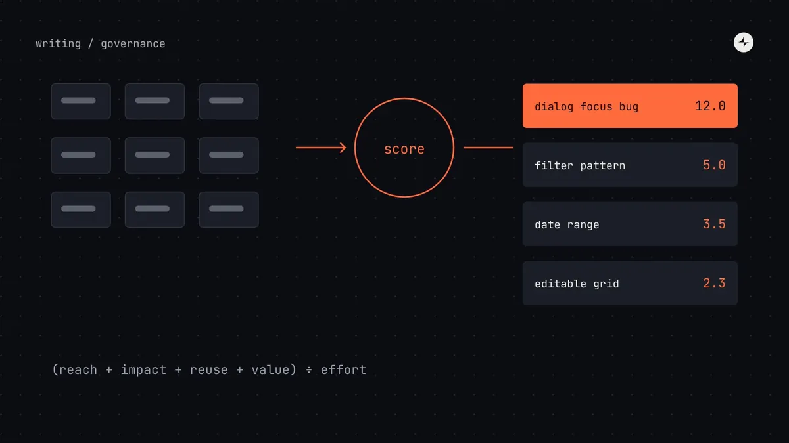
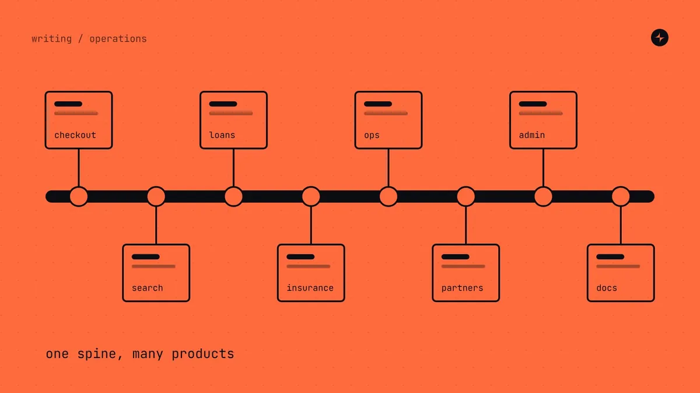
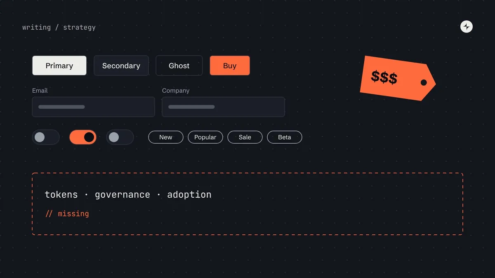
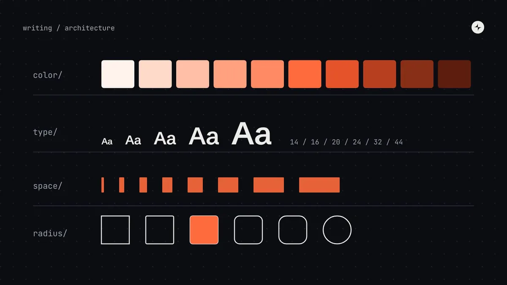

Writing
Notes on building and running design systems
Practical, plain-English guides to design systems: what they are, tokens and colour, components, governance, the teams behind them and how to tell whether it's working. From systems built at CARS24, IBM and JPMorgan Chase.
 Start here · 13 min readWhat is a design system? A plain-English guide for product teamsA design system is the set of decisions, parts and agreements a company uses to build its product's interface the same way every time. Here's what that means in practice, what's inside one, and how to tell whether you need one.
Start here · 13 min readWhat is a design system? A plain-English guide for product teamsA design system is the set of decisions, parts and agreements a company uses to build its product's interface the same way every time. Here's what that means in practice, what's inside one, and how to tell whether you need one.
Reading paths
Short, ordered paths through the library. Every article stands on its own.
01
Design Systems 101
The basics, for anyone new to design systems.
02
Building one
From the first audit to a documented system people can use.
03
Tokens in practice
Tokens, colour and themes, with real values you can check.
04
The operating model
How design systems are run after launch: teams, decisions and requests.
05
Proving value
Metrics and money: how to show a design system is working.
All articles
 Design system vs style guide vs component library vs UI kitFour terms people use interchangeably, and what each actually includes. A comparison table, a diagram of how they nest, and how to tell which one you have.Fundamentals · 8 min
Design system vs style guide vs component library vs UI kitFour terms people use interchangeably, and what each actually includes. A comparison table, a diagram of how they nest, and how to tell which one you have.Fundamentals · 8 min Do you need a design system? A decision guide for startups and growing teamsSeven questions, five maturity stages and the signs you've outgrown a UI kit. A practical way to decide whether your team needs a design system yet.Fundamentals · 11 min
Do you need a design system? A decision guide for startups and growing teamsSeven questions, five maturity stages and the signs you've outgrown a UI kit. A practical way to decide whether your team needs a design system yet.Fundamentals · 11 min How to build a design systemAudit, foundations, tokens, first components, docs and governance, in order. A staged 12-month plan with gates, so you invest only as fast as it pays off.Building a system · 11 min · Guide
How to build a design systemAudit, foundations, tokens, first components, docs and governance, in order. A staged 12-month plan with gates, so you invest only as fast as it pays off.Building a system · 11 min · Guide How to run a design system audit (with an interface inventory method)Screenshot, group, count and prioritise every button, field and colour in your product. A step-by-step UI audit that ends in a ranked plan, not a slide.Building a system · 8 min
How to run a design system audit (with an interface inventory method)Screenshot, group, count and prioritise every button, field and colour in your product. A step-by-step UI audit that ends in a ranked plan, not a slide.Building a system · 8 min Design tokensWhat design tokens are, the three tiers, naming, the DTCG 2025.10 format and how tokens reach code. Examples and JSON you can adapt for your system.Foundations & tokens · 10 min · Guide
Design tokensWhat design tokens are, the three tiers, naming, the DTCG 2025.10 format and how tokens reach code. Examples and JSON you can adapt for your system.Foundations & tokens · 10 min · Guide Dark mode with design tokensBuild dark mode by swapping semantic tokens, not redesigning screens. A worked example with checked contrast ratios, naming rules and the common traps.Foundations & tokens · 8 min
Dark mode with design tokensBuild dark mode by swapping semantic tokens, not redesigning screens. A worked example with checked contrast ratios, naming rules and the common traps.Foundations & tokens · 8 min How to build an accessible colour palette in OKLCHWhy OKLCH beats HSL for UI colour, and how to build even, accessible ramps step by step. With a computed palette and contrast numbers you can check.Foundations & tokens · 10 min
How to build an accessible colour palette in OKLCHWhy OKLCH beats HSL for UI colour, and how to build even, accessible ramps step by step. With a computed palette and contrast numbers you can check.Foundations & tokens · 10 min Design system governance: who decides what, and howGovernance without bureaucracy: decision rights, a lightweight review process, escalation paths and a decision log. How it should change as you grow.Governance · 9 min · Guide
Design system governance: who decides what, and howGovernance without bureaucracy: decision rights, a lightweight review process, escalation paths and a decision log. How it should change as you grow.Governance · 9 min · Guide Design system team structureWho you need on a design system team, at what company size, and where they report. Org charts, a role table and the signs it's time to grow the team.Operating model & teams · 8 min
Design system team structureWho you need on a design system team, at what company size, and where they report. Org charts, a role table and the signs it's time to grow the team.Operating model & teams · 8 min The design system operating modelLaunch is the easy part. How design systems actually run day to day, from intake and office hours to releases and roadmaps, by company size.Operating model & teams · 10 min · Guide
The design system operating modelLaunch is the easy part. How design systems actually run day to day, from intake and office hours to releases and roadmaps, by company size.Operating model & teams · 10 min · Guide
Design system contribution modelA contribution model that scales: one front door, a request form, a scoring formula for priorities, contribution levels and the review flow.Governance · 8 min Design system documentationWhat people actually read in design system docs, the sections every component page needs and how to structure the portal. A page template to copy.Building a system · 8 min
Design system documentationWhat people actually read in design system docs, the sections every component page needs and how to structure the portal. A page template to copy.Building a system · 8 min How to measure design system successWhich design system metrics to track at each stage: adoption, coverage, detach rate, satisfaction, time saved. With a dashboard layout and survey questions.Business case & measurement · 7 min
How to measure design system successWhich design system metrics to track at each stage: adoption, coverage, detach rate, satisfaction, time saved. With a dashboard layout and survey questions.Business case & measurement · 7 min Design system ROIWhat a design system really costs, where savings come from and when it pays back. A transparent model with break-even by team size and its limits.Business case & measurement · 9 min
Design system ROIWhat a design system really costs, where savings come from and when it pays back. A transparent model with break-even by team size and its limits.Business case & measurement · 9 min Most design system leads are just librariansWhy maintaining a library isn't the same as leading a design system, and what leading one actually involves.Operating model & teams · 3 min
Most design system leads are just librariansWhy maintaining a library isn't the same as leading a design system, and what leading one actually involves.Operating model & teams · 3 min
Design systems as operational backbonesOperating model & teams · 5 min · on Medium ↗
Most design systems are just expensive UI librariesFundamentals · 8 min · on Medium ↗
Foundations of modern design systemsFoundations & tokens · 5 min · on Medium ↗